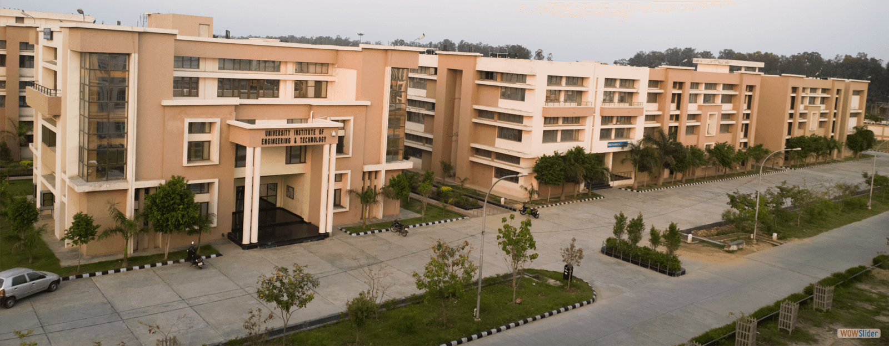

About Us
The University Institute of Engineering & Technology (UIET), was established in the year 2005 with the aim of providing quality technical education in Engineering & Technology. The Institute offers six B.Tech programmes of 4 years duration in Mechanical Engineering, Electrical Engineering, Civil Engineering, Computer Science Engineering, Electronics Communication Engineering and Biotechnology. In a short span, the U.I.E.T. has become a preferred destination for B.Tech aspirants because of its good infrastructural facilities and excellent faculty compared with those of other institutes in the region. To meet the requirements of industries, the Institute continues to review and revise the syllabi of its B.Tech Programmes at frequent intervals, and recently the Faculty of Engineering & Technology has again recommended their revision. To prepare its students to meet the expectations of the challenging and competitive world, the UIET arranges at regular intervals Seminars, Workshops,Group Discussions, Extension Lectures by well known faculty members from within and outside the Campus, besides speciality from industry and our experience shows that students get immensely benefited from these academic activities. The students have brought laurels to the Institute by winning top positions at various TechnoFests, Quiz Contests and other co-curricular activities. With the changing times, the Institute has been acquiring latest gadgets for improving the quality of instructional facilities. In the last few years, the Department has added the latest Instructional equipment such as LCD Projectors, Laptops, Visualizer, Digital Cameras, Fax Machine, Scanners, and Printers besides complete networking of the Lab and wi-fi internet connectivity over the entire Institute. The institute has a very good and spacious workshop building of 1500 sq. mts which is the largest in Haryana. UIET have approximately 18000 sq. mts space costing about Rs 32 crore . It consists all the modern teaching aids and facilities for its students for improving the quality of education and proper skill development. Vision To offer excellent blend of Research and practical oriented academic programmes with an aim to achieve global standards. Mission To impart futuristic technical education and prepare technologically superior, ethically strong and socially responsible professionals to compete in global environment of Engineering and Technology.
